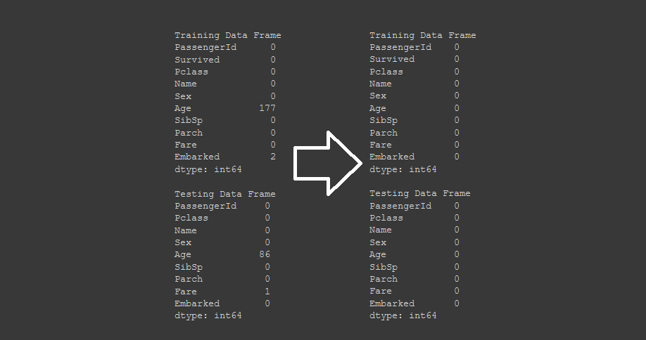
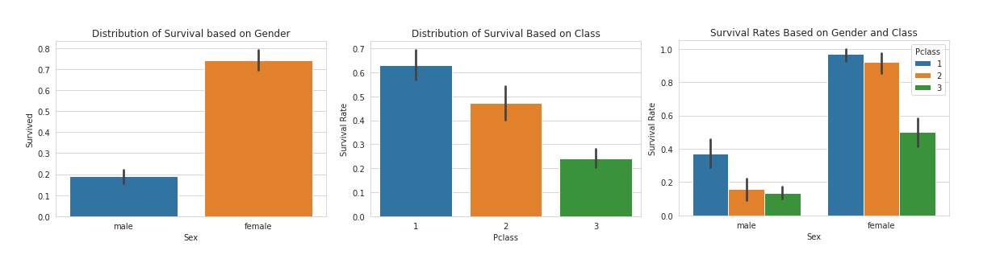
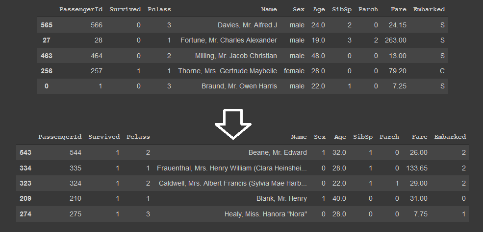

Caso de estudio: Dataset Titanic con sklearn
En este caso de estudio, vamos a ver el uso del lenguaje Python con la librería sklearn para realizar una análisis de los datos del dataset Titanic. Además, se mostrarán métodos para la limpieza de los datos como en la sección anterior y por último realizaremos una pequeña introducción a Feature Engineering.
¿Qué contiene este dataset?
El dataset analizado posee varios datos sobre pasajeros a bordo del Titanic en 1912 y una distinción donde se especifica si estos sobrevivieron o no.
Los datos o atributos en el dataset son los siguientes:
- Survival: Booleano que identifica si el pasajero sobrevivió (0 = NO, 1 = SI)
- IdPasajero: Número para identificar al pasajero, completamente arbitrario
- PClass: Clase de ticket del pasajero, 1ra, 2da o 3ra clase (siendo la 1ra la más cara y la posicionada más alta en el barco y la 3ra la económica y la posicionada más abajo en el barco).
- Name: Nombre del pasajero
- Sex: Sexo del pasajero (male o female)
- Age: Edad del pasajero
- SibSp: Número de hermanos o esposo/a abordo del titanic
- Parch: Número de padres/hijos abordo del titanic
- Ticket: Identificador alfanumérico del ticket
- Fare: Precio del ticket
- Cabin: Identificador de la cabina correspondiente a su ticket.
- Embarked: Puerto de embarcación (C = Cherbourg, Q = Queenstown, S = Southampton)
El objetivo de este dataset es, utilizando todos las variables, poder predecir a futuro la probabilidad de que supervivencia de un pasajero nuevo X dados todos los datos salvo, obviamente, si sobrevivió o no.
Carga de datos
Antes de comenzar, debemos descargar los datasets de training y el de testing. En el aprendizaje automático, el set de training es aquel cuya salida ya es sabida (en este caso, si la persona sobrevivió o no) y el de testing es aquel que se utiliza para probar las predicciones del modelo. También existe lo que se llama set de validación, que si bien su salida es sabida, lo utilizamos como prueba para validar que el modelo funciona adecuadamente, eliminando la etiqueta (supervivencia) y luego verificando si la salida del modelo coincide con la etiqueta original.
Por último, se necesitará un compilador del lenguaje Python y la librería SKLearn instalada. Para este tutorial, se recomienda utilizar la herramienta de Google Colab que tiene un intérprete online de Python con varias librerías ya descargadas (incluyendo SKLearn) y es completamente gratuito de usar.
Debemos comenzar importando las librerías:
import numpy as np
import pandas as pd
import seaborn as sns
from matplotlib import pyplot as plt
sns.set_style("whitegrid")
%matplotlib inline
import warnings
warnings.filterwarnings("ignore")
import os
Luego, debemos cargar los datasets descargados, la ruta variará dependiendo del ambiente.
training = pd.read_csv("/content/sample_data/train.csv")
testing = pd.read_csv("/content/sample_data/test.csv")
Finalmente, estamos en condiciones de comenzar a analizar el dataset.
Manejo de datos faltantes
Con el uso de la librería Pandas, podemos ver las columnas con datos faltantes contando todos los valores nulos en ellas
# Filtrado de datos faltantes con pandas
def null_table(training, testing):
print("Training Data Frame")
print(pd.isnull(training).sum())
print(" ")
print("Testing Data Frame")
print(pd.isnull(testing).sum())
null_table(training, testing)
El resultado de esta función, nos mostrará como tenemos muchísimos datos faltantes en "Age" y en "Cabin". Por contexto sabemos que el dato de Cabin no es importante al igual que Ticket, ya que son combinaciones alfanuméricas completamente aleatorias que no tienen correlación con los demás parámetros.
Para manejar los datos faltantes de Age, utilizaremos otra función de pandas que nos permite rellenar los datos no existentes con la media del atributo elegido con los datos que si lo tienen.
## Eliminamos los atributos que no nos sirven
training.drop(labels = ["Cabin", "Ticket"], axis = 1, inplace = True)
testing.drop(labels = ["Cabin", "Ticket"], axis = 1, inplace = True)
# Manejo de valores faltantes, se utiliza la media de los valores para todos los faltantes (Por ejemplo, si tuvieramos tres valores 1 2 3 x, entonces a x se le asignaría: (1 + 2 + 3)/ 3 = 2 )
training["Age"].fillna(training["Age"].median(), inplace = True)
testing["Age"].fillna(testing["Age"].median(), inplace = True)
training["Embarked"].fillna("S", inplace = True)
testing["Fare"].fillna(testing["Fare"].median(), inplace = True)
null_table(training, testing)
Al imprimir nuevamente la tabla de valores nulos, vemos que pandas ya no identifica más valores faltantes.

Visualización de Data
La librería seaborn de Python junto a matplotlib nos permite crear gráficas programáticamente utilizando de 2 a n parámetros. A continuación, vamos a crear tres gráficas:
- Supervivencia en función del sexo
- Supervivencia en función de la clase del ticket (1ra, 2da o 3ra clase)
- Supervivencia en función a ambos parámetros simultáneamente
# Visualización de data, supervivencia en base al sexo
sns.barplot(x="Sex", y="Survived", data=training)
plt.title("Distribution of Survival based on Gender")
plt.show()
total_survived_females = training[training.Sex == "female"]["Survived"].sum()
total_survived_males = training[training.Sex == "male"]["Survived"].sum()
# Porcentaje de hombres y mujeres de los supervivientes para cada clase de pasajero (ticket)
sns.barplot(x="Pclass", y="Survived", hue="Sex", data=training)
plt.ylabel("Survival Rate")
plt.title("Survival Rates Based on Gender and Class")
# Supervivencia en función del sexo con porcentaje de cada clase de pasajero (ticket)
sns.barplot(x="Sex", y="Survived", hue="Pclass", data=training)
plt.ylabel("Survival Rate")
plt.title("Survival Rates Based on Gender and Class")

Al visualizar esta data, podemos realizar conclusiones muy interesantes. En principio, vemos como la supervivencia de las mujeres es muchísimo más alta que la de los hombres (68% de los supervivientes son mujeres y 32% hombres). Esto viene dado a que durante el momento de crisis, las mujeres y los niños fueron prioridad para ser escoltados a los botes salvavidas, lo cual se demuestra en el análisis.
Otra conclusión que podemos realizar, es que , a mejor ticket, mejor chance de sobrevivir. La proporción de pasajero que sobrevivieron por clase fueron:
- 60% de los pasajeros en primera clase
- 48% de los pasajeros en segunda clase
- 25% de los pasajeros en tercera clase
Claramente esto se debe a las posiciones en el barco. Cuando el Titanic impacta contra el iceberg, el barco comienza a inundarse desde abajo hacia arriba. Asimismo, al estar más arriba los pasajeros en primera clase, estaban mucho más cerca de los barcos salvavidas, lo que hizo que fueran prioridad para abordarlos.
En la gráfica final, vemos el mismo comportamiento combinado, en cada sexo, la mayoría de los supervivientes fueron de la primera clase, seguido de la segunda y luego la tercera. Asimismo, la chance de supervivencia es altísima para las mujeres. Podemos ver que casi un 100% de las mujeres en primera clase lograron sobrevivir a la catástrofe.
Feature Engineering
Como su nombre indica, es el proceso de la ingeniería de las características de los datos. Se utiliza el conocimiento previo de los datos para decidir, primero si un dato es importante para la predicción de otros y luego ver una forma de utilizarlo.
En el siguiente ejemplo veremos como podemos utilizar datos categóricos en un modelo de ML. Los datos de sexo y embarque son categóricos por lo que debemos convertirlos en algo numérico para que nuestros modelos puedan utilizarlos en la predicción. Para cumplir con este objetivo, utilizaremos la funcionalidad de LabelEconder de sklearn que permite convertir un valor categórico a uno numérico.
from sklearn.preprocessing import LabelEncoder
le_sex = LabelEncoder()
le_sex.fit(training["Sex"])
encoded_sex_training = le_sex.transform(training["Sex"])
training["Sex"] = encoded_sex_training
encoded_sex_testing = le_sex.transform(testing["Sex"])
testing["Sex"] = encoded_sex_testing
le_embarked = LabelEncoder()
le_embarked.fit(training["Embarked"])
encoded_embarked_training = le_embarked.transform(training["Embarked"])
training["Embarked"] = encoded_embarked_training
encoded_embarked_testing = le_embarked.transform(testing["Embarked"])
testing["Embarked"] = encoded_embarked_testing

Como podemos ver, los datos fueron convertidos exitosamente en numéricos, lo cual va a hacer que nuestro modelo pueda utilizar esas características en sus predicciones y generar mejores resultados.